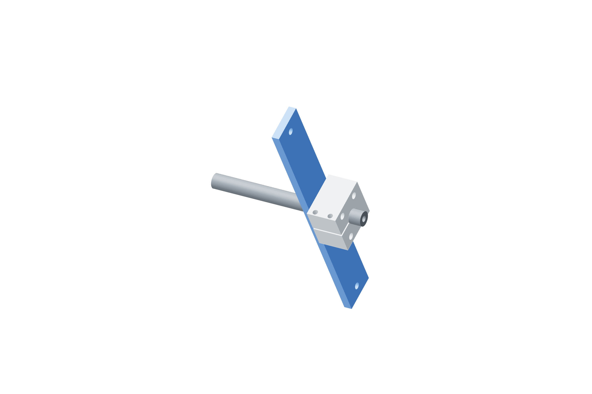

Retention / actual load108 / 179
Measure signed gravity and cable moments
An endpoint pull alone cannot bound a cable’s free couple. A separate drive-lever hub lets a balanced test lever measure shaft moment while the output hub carries the actual gun and cradle.
Addangular-load-lever · reuse 4 M5 × 45 drive-lever hub bolts · gauge backing / vise or characterized redirect
Tools / setupGun / cable at actual baseline · independently clamped catch / support

- Park and restrain the gun independently. Let the clamped gauge or characterized cord restrain the angular rotor before disconnecting its actuator clevis.
- Transfer the lever to the separate angular drive-lever hub using its four M5 × 45 bolts. Keep actual payload on the output hub; retain both qualified clamp bolts and the shaft’s metal axial-capture stack.
- Let the gauge/cord take the rotor reaction, then clear normal supports from the measured moment path. Retain the immediately nearby independent catch.
- At every accepted pose, measure signed tangential onset in both directions at the actual 100 mm radius. Reverse the gauge reaction side; use weighed cord loads for small roll forces.
- Stop at onset, before catch/capture contact. Record the larger absolute force, complete uncertainty, alignment and actual lever radius.
Ready when
Every permitted pose has a restrained signed onset record, and its conservative moment upper bound includes gravity, cable and bearing resistance. An unrestrained rotor, unknown force line or changing cable baseline invalidates the moment bound. Restore support and correct the fixture before releasing a clevis.